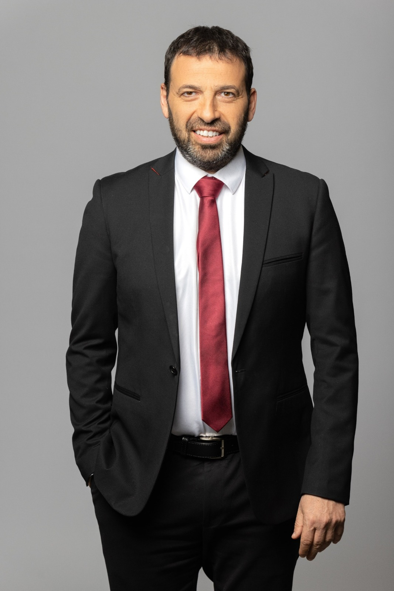

Real-time intelligence briefings, campaign developments, and geopolitical analysis covering the electoral cycle and its strategic implications.
Gadi Eisenkot's steady ascent has clearly exposed the weakness of the Naftali Bennett-Yair Lapid merger. Channel 12 polling signals sea change within the anti-Netanyahu coalition, made up by the dramatic common point of Naftali Bennett and Gadi Eisenkot's political fortunes. Since breaking into an independent run, Bennett’s newly formed Together alliance has suffered a continuous contraction, shedding seats sequentially from a peak of 28 down to a fragile 21. On the other hand, Eisenkot’s reformist list, Yashar!, has capitalized on this situation, gaining two additional seats this week to reach an institutional high of 19. This narrow two-seat differential effectively ends Bennett’s uncontested claim to the leadership of the Change Bloc, transforming the primary race into a balanced, dual-axis conflict between a populist center-right and a technocratic defense center. Eisenkot’s surge is fundamentally driven by a voter base seeking institutional sobriety over polarizing rhetoric. While Bennett and Yair Lapid have pursued a hardline anti-clerical campaign on the ultra-Orthodox draft issue, Eisenkot’s strategic nuance—including his high-profile television appearance clarifying that he favors new elections over a fraudulent conscription bill—has resonated with moderate traditionalists. By refusing to unequivocally lock himself out of potential future alignment options and focusing heavily on elite national security recruits, Eisenkot has successfully positioned Yashar! as the natural home for pragmatic voters. This momentum is further verified by head-to-head suitability polling, where Eisenkot completely matches Benjamin Netanyahu at 38%, comfortably outperforming Bennett’s 31% national score.
Why Bezalel Smotrich's recruitment of right-wing hostage advocate Tzvika Mor signals a calculated shift to anchor the ideological settler movement ahead of the late 2026 elections. As the Knesset edges closer to an early dissolution vote on Monday, Finance Minister Bezalel Smotrich is moving quickly to protect his party, Religious Zionism, from falling below the 3.25% electoral threshold. His most significant strategic move this week was securing the candidacy of Tzvika Mor, a prominent leader of the Tikva Forum and the father of an Israeli hostage. Mor is an influential figure on the national-religious right who has publicly opposed making major concessions to Hamas. By placing Mor in a high-ranking slot on his candidate list, Smotrich is intentionally injecting deep emotional and moral authority into his hawkish campaign platform. This appointment represents a calculated effort to outflank his coalition rival, Itamar Ben-Gvir, and appeal directly to hardline voters who reject any wartime compromise. In past months, polling showed Smotrich's party teetering dangerously close to political elimination. By bringing a prominent hostage father into the leadership core, Smotrich changes the debate. He frames his refusal to support a ceasefire not as political stubbornness, but as a deeply principled national stance. This move ensures that the ideological settler movement remains a powerful, unified force on the dashboard's coalition matrix.

How mainstream media contempt for the Arab sector, highlighted by Raviv Drucker’s controversial Haaretz column, threatens to collapse the center-left's chances of reaching a 61-seat majority. A bitter media war has erupted within the anti-Netanyahu camp following an editorial by prominent Haaretz analyst Raviv Drucker. Drucker openly demanded that the Arab political parties not unite into a joint list. He argued that a unified Arab faction would alienate moderate right-wing Jewish voters, making it harder for the Change Bloc to build a viable coalition. His commentary went as far as tweeting patronizing remarks about Arab voter turnout being tied to the completion of the "olive harvest." This condescending perspective has sparked severe fury across the Arab sector, exposing how deeply the Tel Aviv media elite treats Arab citizens as mere tools for political leverage. This media backlash could have severe structural consequences for the upcoming election. By treating Arab lawmakers as servants expected to split or merge based on Jewish political needs, mainstream commentators are driving down Arab voter motivation. If Arab voters choose to stay home out of protest, small independent Arab factions like Balad, Ra'am, or Hadash-Ta'al risk falling below the 3.25% threshold. If these votes are thrown into the trash, Netanyahu will automatically secure his 61-seat majority—repeating the exact mathematical disaster that brought his government to power in 2022. Your forecasting engine must track whether this anger triggers an independent Arab voter surge or absolute apathy.